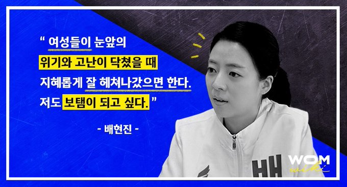

대한민국의 국회의원. 미래통합당 소속으로, MBC 뉴스데스크 전 앵커이다. 제21대 국회의원 선거에서 4선의 최재성을 누르고 서울 송파구 을에 당선되었다. |  |
1983년 11월 6일, 서울특별시에서 1녀 1남 중 장녀로 태어났다. 숙명여자대학교 국어국문학과를 졸업하였다. 정보방송학과를 복수전공하였다.
7수 끝에, 무려 1,926:1의 경쟁률을 뚫고 2008년 11월 MBC 공채 아나운서로 입사했다.
2010년 6월 12일 2010 남아프리카 공화국 월드컵 특집 주말 MBC 뉴스데스크 방송부터 뉴스데스크 앵커로 합류하였다. 같은 해에 2010 광저우 아시안 게임 개막식에 MBC 특파원으로 취재를 나갔고, 동년 11월 6일부터는 앵커 최일구와 주말 8시 뉴스데스크 진행을 맡았다.
2013년 11월 15일 뉴스데스크 방송을 마지막으로 앵커 권재홍과 함께 뉴스데스크를 하차했다. 이후 3개월 정도 휴직했다가, 2014년 4월 24일 기자로 전직하였다.
2014년 5월 12일에 앵커 박용찬과 함께 평일 8시 뉴스데스크로 다시 복귀했다. 2015년 11월 6일 박용찬 하차 이후로 앵커 이상현과 함께 2017년 12월 7일까지 뉴스데스크를 진행하였다. 12월 7일 이날 최승호가 MBC 사장에 선임되고 8일 앵커 하차가 결정되면서 고별 인사 없이 뉴스데스크에서 물러났다. 주말 뉴스데스크 진행 경력을 포함하여 역대 최장수 여성 앵커(2,491일)이다.
2018년 3월 7일 MBC를 퇴사하였다.
배현진 의원은 총선을 준비하며 여성 정책과 관련해 보육, 교육, 안전 문제에 대한 관심을 표했고, 남성 중심의 정치계에서 한계와 고난이 닥쳤을 때 지혜롭게 잘 헤쳐나가는 여성으로서 사회에 보탬이 되고 싶다고 밝혔다.1 또한 “사회 생활을 하면서 여성이라서 한계가 있을 것이라는 주변의 시선과 이야기를 많이 들었다”며 여성들이 눈앞의 위기와 고난이 닥쳤을 때 지혜롭게 잘 헤쳐나갔으면 하고 그에 보탬이 되고 싶다고 말했다.2